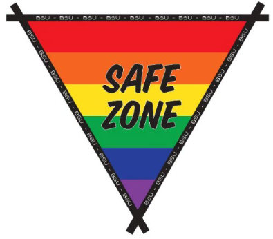

Pronoun: he/him/his (what is this) 
Associate Lecturer of Computer Science
Advisor: Golden Key International Honour Society,
BSU chapter
Ball State University
Department of Computer Science
Email: dllargent@bsu.edu
Robert Bell Building (RB), room 375
2000 W. University Avenue
Muncie,
Indiana USA 47306
CS4MS+ immersive learning project:
Want to know more? Look at these pages.
How to pronounce my name, and what to call me...

About me
|
Art Show*
|
Come talk!
|
CS4MS+*
|
Diversity & inclusivity
|
My schedule*
|
Memberships
|
Publications*
|
Resources*
|
Recognitions
|
Tips for academic success*
|
Miscellaneous
|
*This link opens a new page.
I am very willing and want to talk with you. Please take advantage of my scheduled office hours (refer to
my schedule), or
contact me
to schedule a different time. You're even welcome to simply drop by at any time; if my office door is open,I'm available to meet
with you.
Here are some fun and informative videos which explain why you should come to office hours, and how you should talk with your professors.
I have compiled a list of readings which address diversity and inclusivity.
Here are resources I've used in my classes to introduce diversity and inclusivity.
I am a member of the following organizations. You may find membership in them beneficial as well.
I am an experienced, learner-centered university lecturer with more than 40 years of experience in systems analysis, programming, database design, teaching, overall business operations, and managing an information technology department in a medium sized company. After working in industry for nearly 30 years, I returned to academia and completed a master's degree in Computer Science at Ball State University in 2010. I have been teaching full time at BSU since then. In addition to my teaching responsibilities, I serve as an advisor for the Golden Key International Honour Society chapter at BSU, and as a leader in the Boy Scouts of America. During past summers I have served as the camp director of a local scout camp.
A collection of words that describe me includes: husband, father, grandfather, son, brother, uncle, friend, mentor, teacher, faculty member, researcher, student organization advisor, power walker, Internet addict, punster, good procrastinator, assistant scout master, merit badge counselor, knot head, Eagle Scout, Order of the Arrow (Vigil), Firecrafter (Minisino), and Wood Badge (Bear!).
I enjoy being part of other’s learning, and especially like seeing a "light bulb" turn on when something suddenly "clicks" for a learner. I also find it very rewarding to mentor young adults as they take on, and learn the meaning of, leadership.
My efforts have been recognized and awarded in the following ways throughout the years.
As I have time, content will be added here.
My time comes in sporadic, random, blocks, so you really have no way of knowing how often you should check back.
My advice is to check back sporadically and randomly.
At some point, our sporadic randomness will match and there will be something more for you to see!